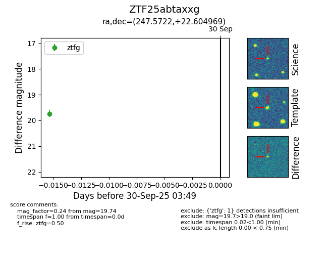

FINK: ZTF25abtaxxg
Lasair: ZTF25abtaxxg
ALeRCE: ZTF25abtaxxg
ZTF25abtaxxg (ztf,fink)
equatorial (ra, dec) = (247.5722,+22.60497)
galactic (l, b) = (40.4100,+40.53387)

last ztfg=19.74
1 ztfg detections